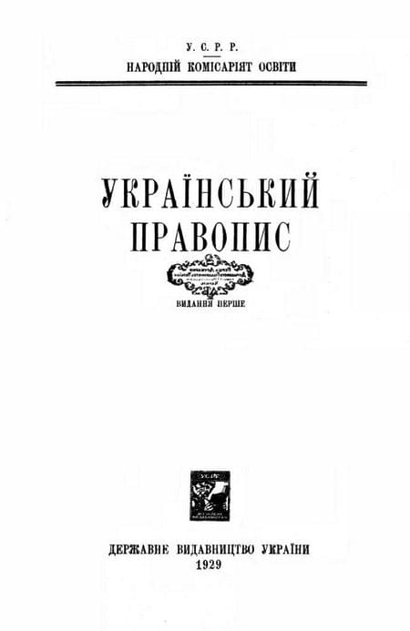

Формування української мови
Зародженя
III
- Індоєвропейська прамова,
- Слов'янська,
- Східноcлов'янска.
- Індоєвропейська прамова,
- Слов'янська,
- Східноcлов'янска.
Праслов'яньска мова
I - II
- Індоєвропейська прамова,
- Близько 2 - 5 тис. років тому,
- Реконструювали.
- Індоєвропейська прамова,
- Близько 2 - 5 тис. років тому,
- Реконструювали.

Розвиток Слов'янських мов
VII
- Розгалуження праслов'янської мови,
- Утвореня рис Української мови,
- Буква "Г",
- Закінченя імеників,
- Закінченя (мо) у дієслвах,
- Заміна літери "е", на "о".
- Розгалуження праслов'янської мови,
- Утвореня рис Української мови,
- Буква "Г",
- Закінченя імеників,
- Закінченя (мо) у дієслвах,
- Заміна літери "е", на "о".

Окрема Українська мова
XI
- Швидкий розвиток
- Українська мова стає унікальною серед інших
- Українська мова досі не схожа на ту що ми знаєм
- Швидкий розвиток
- Українська мова стає унікальною серед інших
- Українська мова досі не схожа на ту що ми знаєм

Створеня літературної мови
XII
- Роки Київської Русі
- Церковнослов'яньска
- Давньоруська
- Українська мова стає індивідуальною, та схожою на сучасну
- Роки Київської Русі
- Церковнослов'яньска
- Давньоруська
- Українська мова стає індивідуальною, та схожою на сучасну
Продовженя розвитку мовиXIV
- XIV - XVII ст.н.е.
- поява Староукраїньскої книжної мови
- Нова українська літературна мова
- XIV - XVII ст.н.е.
- поява Староукраїньскої книжної мови
- Нова українська літературна мова
Лексис
1595p
- Пояснення Церковнослов'яньских слів
- переклад на просту, та з елементами живої мови слова
- Пояснення Церковнослов'яньских слів
- переклад на просту, та з елементами живої мови слова
Запровадженя літери Ґ
1619p
- Мелекій Смотрицький
- вимова літери "ґ" у багатьох словах
- Мелекій Смотрицький
- вимова літери "ґ" у багатьох словах
Енеїда
1978p
- перших 3 частини
- Іван Котляревський
- перших 3 частини
- Іван Котляревський
Кобзар
1840p
- Тарас Шевченко
- Існуваня нової літературної української мови
- Тарас Шевченко
- Існуваня нової літературної української мови
Україна Окупована, Закони
XVIII
- Початок XVIII cт.н.е.
- Україна окупована
- Нові закони
- Закон: заборони на друк
- Закон: перепису документів
- Закон: на використаня української мови
- Емський указ
- Початок XVIII cт.н.е.
- Україна окупована
- Нові закони
- Закон: заборони на друк
- Закон: перепису документів
- Закон: на використаня української мови
- Емський указ

Розквіт української мови
XX
- 20 роки це період:
- Викладаня україньскою мовою в школах
- Поява вищих навчальних закладів
- 20 роки це період:
- Викладаня україньскою мовою в школах
- Поява вищих навчальних закладів
Закон на використаня української мови в армії
1919p
Українізація
1923-1932p
- Поява книжок україньскою мовою
- Поява україньского театру
- Розвиток терміналогії
- Поява книжок україньскою мовою
- Поява україньского театру
- Розвиток терміналогії


Знищеня правопису та, припиненя українізації
1930p

Непрості роки
1932-1933p
- Голодомор
- Усуненя розбіжностей
- метафора: "Ростріляне відродження"
- Зникненя україньскої мови
- Спротив русифікації
- Голодомор
- Усуненя розбіжностей
- метафора: "Ростріляне відродження"
- Зникненя україньскої мови
- Спротив русифікації

Закон мов
1989p
- Україньска мова стає держвною
- Україньска мова стає держвною
Незалежність
1991p
- Поаерненя україньскої мови
- російська мова залишилась вживаною
- Поява вищих навчальних закладів
- Поаерненя україньскої мови
- російська мова залишилась вживаною
- Поява вищих навчальних закладів
Помаранчева революція
2004p
- Обов'язковий україньский дубляж
- Квоти на веденя ефірів україньскою
- Обов'язковий україньский дубляж
- Квоти на веденя ефірів україньскою


Революція гідності
2014p
- Закон на обов'язкове використаня україньскої мови в сферах інформації
- Талановиті співаки
- Нове україньске кино
- Поява та заміна слів
- Нові наріччя
- Розвиток української мови
- Закон на обов'язкове використаня україньскої мови в сферах інформації
- Талановиті співаки
- Нове україньске кино
- Поява та заміна слів
- Нові наріччя
- Розвиток української мови
А що буде далі вирішувати нам
"Українцям"
"Українцям"